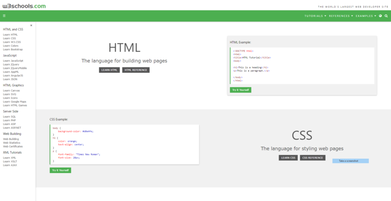

I have used appropriate tools and techniques for the purpose and end users For example, I have created a website using html/css with an external stylesheet. The material is structured and formatted using a range of tags and styles. It has clear headings, body text and lists/bullets if required.
I have applied appropriate data integrity and testing procedures. For example, the site has been tested/previewed either in two unrelated browsers.The text has been proof-read and there are no obvious spelling/grammatical issues.
I have used relevant conventions. For example, design elements such as contrast, repetition, alignment, proximity and white space to lay out their site
I have explained relevant implications. For example, I have explained why copyright should be honoured/images should be credited. I have mentioned why the site should be accessible for colour blind/visually impaired users. I have stated why their site should be easy to navigate (the site may have minor navigation issues).
I can define the purpose of the digital media outcome and the requirements of the end users. I investigated many examples to learn about website design and current design trends. I can generate and model a range of design ideas. For example, I have created a series of possible site layouts. I have experimented with different colour, background and font options. I have sketched wireframes for the initial layout of the page followed by mockups showing various options.
I can explain relevant implications. For example, I have mentioned the importance of honouring copyright and privacy (e.g. getting permission from students whose photos appear in the site). I have explained why the site needs to be aesthetically pleasing, fully functional, easy to use and accessible.
I made my site using repl.it to script the html and css. I used W3schools as a reference. 